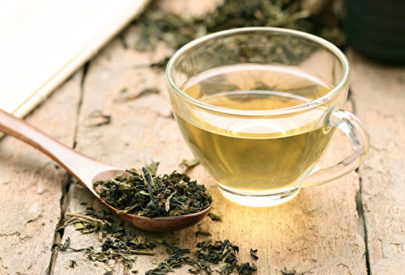
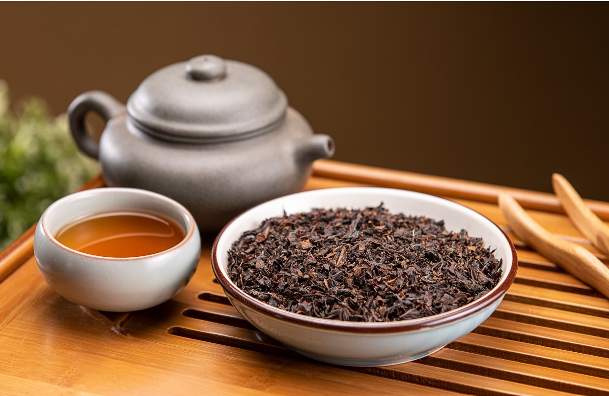
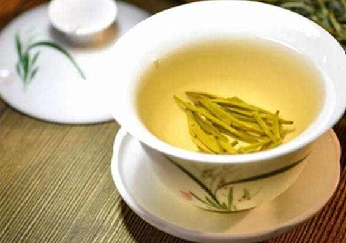
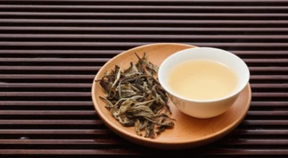
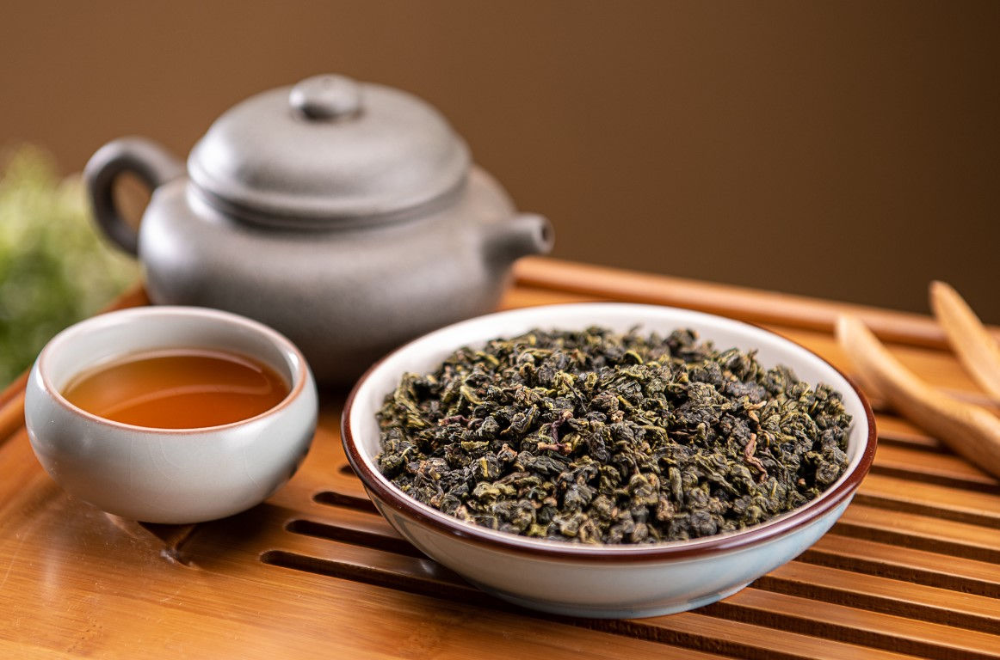
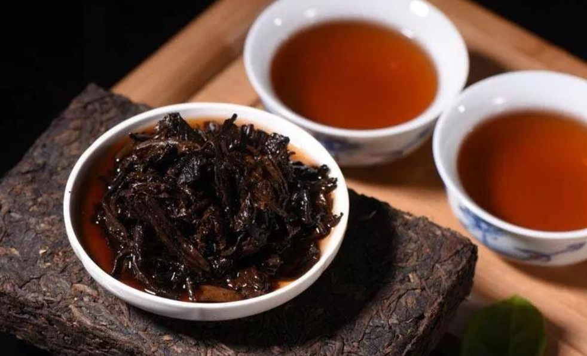

熟悉的茶香
台灣人的飲茶習慣非常盛行，可以從隨處可見的飲料店得知，台灣人很喜歡飲茶！那你知道「喝茶」對我們有什麼好處呢？「茶」對我們的身體健康有幫助，茶含有豐富的抗氧化素，如：茶多酚、類黃酮，這些成分能減緩細胞損傷，進而避免疾病，且茶內含有咖啡因，能夠使人保持清醒，茶還能促進消化，茶類含有豐富的「兒茶素」，具有抗氧化、提高新陳代謝等功效，其中烏龍茶為最佳解油膩消脂的代表，其他像普洱茶也可幫助消食及去膩。那茶葉種類主要分為6種：依發酵程度，由低到高分別為綠茶、黃茶、白茶、青茶、紅茶、黑茶。以下會詳細介紹六大茶種。
茶葉的製作過程可參考以下連結🔗
六大茶類製作過程https://www.tres.gov.tw/ws.php?id=3741
綠茶
若想了解相關資訊請點圖片!
紅茶
若想了解相關資訊請點圖片!
黃茶
若想了解相關資訊請點圖片!
白茶
若想了解相關資訊請點圖片!
烏龍茶
若想了解相關資訊請點圖片!
黑茶
若想了解相關資訊請點圖片!
除了以上六大種茶的資料外，可以來瞭解台灣產茶的小特色👍
一、台灣產茶地
台灣大部分的地區都有產茶，那不產茶的地方有分離島和本島，離島除了馬祖有產茶外其他皆不產茶，本島則是基隆市、新竹市、嘉義市、台南市不產茶外其他地區皆有產茶地。那全台最大產茶區為中部的南投縣，南投縣基本上每個鄉鎮皆有產茶，那其中又以名間鄉產最多。
二、台灣產茶的五大品種
台灣產茶的前五名為青心烏龍、四季春、金萱、青心大冇、翠玉。可以觀賞底下圖片認識一下茶種，那其中筆者認為最特別的為金萱，金萱是改良品種，品嚐起來有奶香味，非常好喝😍
參考連結🔗
http://www.mininting.com/tea-and-coffee-blogs-tw/tea-polyphenol.html